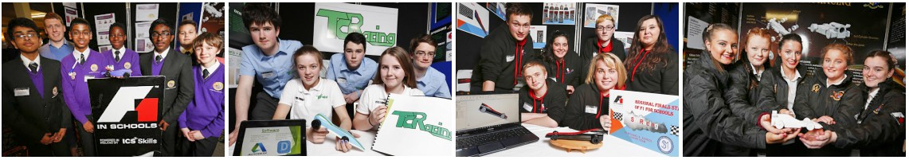
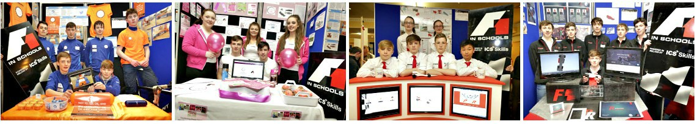
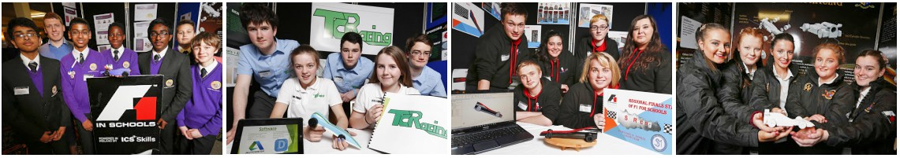
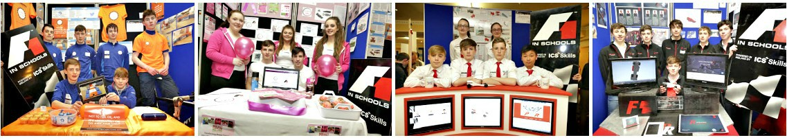
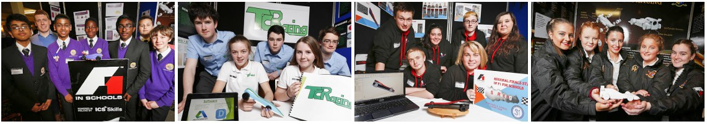
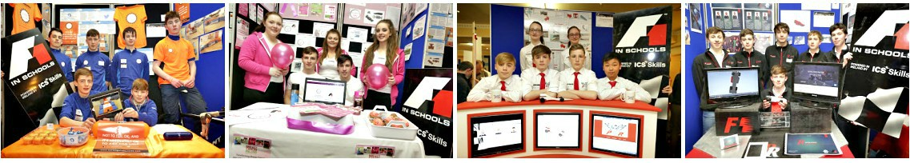
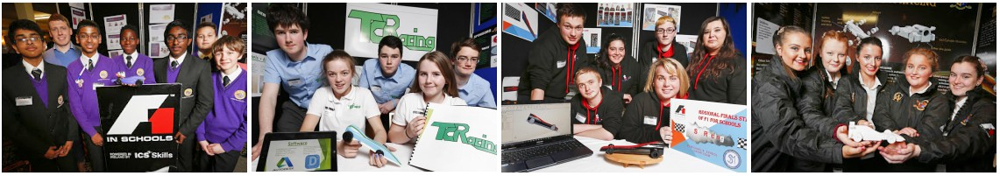
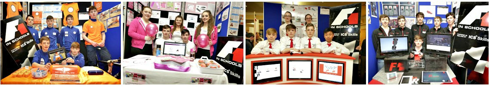

F1 in Schools Technology Challenge: 2015-16
 







Marist Hurricanes from Marist College Athlone were declared the overall winners of the 2015-16 F1 in Schools Technology Challenge, powered in Ireland by the Irish Computer Society Foundation at the National Finals held in Dublin's RDS as part of Tech Week 2016.
The Marist Hurricances team are: Darren O’Hara Duggan (manager), Cian McBrearty, Tom O’Carroll, Jamie McManus, Ciaran McDermott, and Joe Reidy. Their teacher is Mr. Hardiman. The team also scooped the national award for Best Use of ICT and CAD.
The team now has the opportunity to represent Ireland in the 2016 World Championships in Austin, Texas later this year.
F1 in Schools is truly a nation-wide event that attracts school teams from just about every county all across Ireland.
Three Regional Finals are held at third-level institutions every spring to determine which teams will make it through to the National Final.
The Regional Finals provide competitors with the opportunity to gain an exciting educational experience.
They Regionals are also an environment in which students can express their creativity, skills and teamworking ability in a fun and positive way.
The University of Limerick (UL) hosted the Southern Regional Finals of F1 in Schools on the 3rd of March 2015.
Check out our collection of photographs from the day's event.
GMIT Castlebar was the venue for the Western Regional Finals of F1 in Schools on the 10th of March 2015.
View our picture gallery from the day at GMIT Castlebar here.
The National Finals of F1 in Schools Season 2014-15 were held on 29 April at Dublin Castle.
Junior and senior teams competed to determine the national award-winners in various categories – and to discover the overall national champion who would represent Ireland at international level.
The F1 Finals formed part of Tech Week, Ireland's Annual Festival of Technology that engages, challenges and inspires Irish students to interact with technology and to open their minds to all the possibilities of careers in IT.
CEO of the Irish Computer Society Jim Friars congratulated all of the participants.
"The teams raised the bar considerably this year and it was amazing to see the excitement and enthusiasm from both students and teachers alike. An incredible level of commitment and teamwork was displayed and the lengths that the teams went to in modelling and planning the cars were unprecedented."

Zero Tolerance Racing
St.Brigid’s Vocational School
Loughrea
AIB Racing
St. Muredach’s College
Ballina
Enterprise Racing
Presentation College
Carlow
Karrotica F1
Luttrellstown Community College
Dublin 15
Fusion F1
Saint Eunan’s College
Letterkenny
Tracktion
HEX CNC
Knockvicar
Team AIB Racing
St. Muredach’s College
Ballina
Surge Racing
Gaelcholáiste Chéitinn
Clonmel
Bolt F1
Scoil Chriost Rí
Portlaoise
Tracktion
HEX CNC
Knockvicar
Sigma F1
Dundalk Grammar School
Co. Louth
Presentation College
Headford, Co. Galway
Presentation College
Carlow
Presentation College
Carlow
St. Attracta’s
Tubbercurry, Co.Sligo
St. Muredach’s College
Ballina, Co. Mayo
Gaelcholáiste Chéitinn
Clonmel, Co. Tipperary
Carlow
Gaelcholaiste CheatharlachDublin Road, Carlow
Supreme Speed J
Muinebeag Vocational SchoolBagnelstown
KJZ Racing S
Presentation CollegeCarlow
Fuinneamh Racing S
Alpha Racing J
Enterprise Racing J
Clare
St. Joseph'sSpanish Point
Speed Merchants J
Four Stroke Racing J
Cork
Coláiste an ChraoibhinDuntahane Road, Fermoy
Sabre F1 S
Scoil MhuireKanturk
Team Origin S
Donegal
Coláiste Chineál EoghainBuncrana
50CCE J
Foireann Tintreach J
Crana CollegeBuncrana
Wild Hawk Racers S
Slick Quick S
Loreto Community SchoolMillford
Innov8 J
St Columba's ComprehensiveGlenties
Team Hot Rod S
St. Eunan's CollegeLetterkenny
Fusion S
Dublin
Collinstown Park Community CollegeClondalkin
Collinstown Speedsters J
Gonzaga College SJSandford Road
Ventus S
Gonzaga Racing S
Loretto CollegeSwords
Team Evolution J
Lutrellstown Community CollegeClonsilla
Falcon F1 J
Foenix F1 J
Karrotica F1 S
St. Andrew's CollegeBooterstown Avenue, Booterstown
Transonic S
Dynamic Power S
St Benildus CollegeUpper Kilmacud Road, Stillorgan
Retro Racing J
Domestic Drivers J
St. Joseph's Secondary SchoolRush
Innovative Racing J
Contour S
Team Equinox S
St. Mary's College C.S.Sp.Rathmines
White Star S
D'Custard Creamers S
St. Mary's School for Deaf Girls & St. Joseph School for Deaf BoysCabra
DeaFurious S
Shooting Shark S
St. Michael's SchoolGlenmaroon
Holy Rocket Racing S
Galway
Garbally CollegeGarbally Park, Ballinasloe
F1 Flash S
Team Twister S
Presentation CollegeHeadford
Ignition Racing J
St. Brigid's Vocational SchoolLoughrea
ZT Racing S
St. Mary's CollegeGalway
Light Speed J
Vocational School AthenryAthenry
Aviator F1 J
Kerry
Castleisland Community CollegeTonbwee, Castleisland
Crash Test Dumbies S
Speed Demons F1 S
Kilkenny
Coláiste Pobail OsraiOrmonde Road, Kilkenny
Blitzkrieg Racing S
Leviathan S
Kilkenny CollegeCastlecomer Road, Kilkenny
Team Titan S
Wildfire S
Presentation Secondary SchoolLoughboy
Team Fuinneamh S
Laois
Scoil Chriost RíPortlaoise
Dynamics J
Alpha J
Bolt F1 S
Nitro Sonic S
Leitrim
Carrick-on-Shannon Community SchoolCarrick-on-Shannon
Storm Racing S
Perfriction S
Carrigallen Vocational SchoolCarrigallen, Turbo
ZEUS Racing S
Velocious V12 S
Mohill Community CollegeMohill
Team XLR8 S
Leitrim Rebels S
Limerick
St. Nessan's Community CollegeMoylish Park, Limerick
Turbo Titans S
Louth
Ardee Community SchoolArdee
Racing Vision S
Dundalk Grammar SchoolThe Crescent, Dundalk
Echo Racing S
Zoran F1 S
Mayo
Colaiste Pobail AclaAchill
Eiredynamic Racing S
Mickey's Motors S
St. Muredach's CollegeBallina
Team AIB Racing S
St. Tiernan's CollegeCrossmolina
Cross Racers S
Sligo Pallet Racers S
Offaly
Oaklands Community CollegeEdenderry
A.D.A.M. J
Predator J
The All Cars S
Neon Lions S
Roscommon
HEX CNCKnockvicar
Tracktion S
Mean Scoil Muire Gan SmalRoscommon
Flash Voyager S
Elphin Community CollegeCastlerea
Elfinity J
Aerostat S
Roscommon Community CollegeListnamult
NRG Racing S
Sligo
Grange Post Primary SchoolGrange
Team FKPerformance S
St. Attracta's Community SchoolTubbercurry
Verus Racing S
Tipperary
Gaelcholáiste CheitinnThe Mall, Clonmel
Ultra Speed S
Surge Racing S
CBS ThurlesThurles
FalconTech S
Westmeath
Marist College AthloneRetreat Road, Athlone
Spectrum Racing S
Imagine building a 1/20th-scale F1 racing car capable of travelling at over 110km/hr – using advanced 3D design software, automated manufacturing technology... and some bright ideas from you and your team mates.
F1 in Schools is a unique technology challenge that enables second-level students to get their hands on the latest technology from the worlds of technology, engineering and manufacturing.
The F1 in Schools Challenge is not all about speed. Teams are also judged on the quality of their engineering, graphic design, portfolio, media skills, handling of sponsorship and verbal presentation of their work.
A global competition, F1 in Schools is operated in Ireland by the Irish Computer Society. Eddie Jordan, BBC F1 TV personality and former f1 Team Manager, is a Patron of F1 in Schools Ireland.
"I have learned so many skills and gained so much experience. We have put in so much time, and I don't regret it at all. Should be encouraged to all schools!"
Juliette Crosbie, student,
Dundalk Grammar School
"I enjoyed the F1 in Schools even though I had very little background in technology subjects or business. I've learned a lot from the competition."
Jordan O'Connor, student,
Templeogue College
"F1 in Schools gave students experience in areas of ICT and engineering they would not have got if they did not enter."
Clare McHugh, teacher,
Presentation College Carlow
"Students receive higher results ... Maths, Design & Communications Graphics, Technology, Construction, Art, Business. etc. – all benefit."
Declan Mullins, teacher,
Castleblayney College
TEAM LOGIN
FIND US ON FACEBOOK